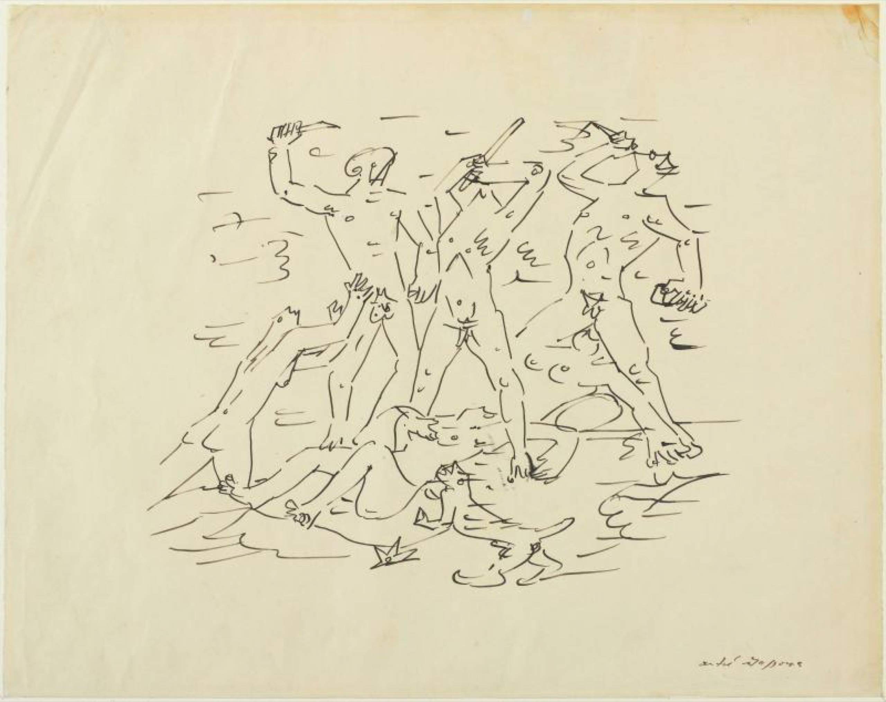

Lágrimas de Eros · Obra 92 de 124
Masacre
André Masson (1933)

Dibujo a pluma: un hombre con un cuchillo, cuerpos derribados y, al fondo, una figura crucificada. Está firmado y fechado en 1933. Bataille, amigo del pintor, lo reproduce sin comentario.
Lo que hace que destaque
Dibujo a pluma: un hombre con un cuchillo, cuerpos derribados y, al fondo, una figura crucificada. Está firmado y fechado en 1933. Bataille, amigo del pintor, lo reproduce sin comentario.
Contexto histórico
Sin identificar. El Reina Sofía tiene en depósito otra «Massacre» de 1933 (tinta, 31 × 45 cm, DO01756) sin imagen publicada; su proporción no parece la de la lámina y no se da como la misma. Que Bataille fuera amigo de Masson no está en las fuentes citadas.
Autoría y procedencia
André Masson (1896-1987), pintor y dibujante francés, pionero del dibujo automático y uno de los artistas más intensos del surrealismo.
En los libros
Las lágrimas de Eros, de Georges Bataille · Lámina de la p. 168
Ficha pendiente de contrastar con fuentes académicas.